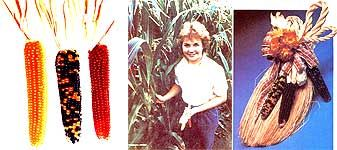

How can just three cobs of corn lead to an ongoing adventure? Well, in my case, it happened through lots of work, determination and an interest in gardening. Of course, starting young helped, too.
I'm Shelly Hoff, and I'm 15 years old. I once read that horticulture specialist Dr. Charles Dunham said, "No child is too young to experience the pleasure of gardening." Well, I guess he was right, because I started when I was two years old by dropping seed potatoes in hills!
My gardening experience grew as I grew. By the time I was seven and a Discovery member in my area 4-H club, I had two of my own six-foot-long rows of crops. And these days I have a 50-by-100-feet garden. Furthermore, four rows of my plot are now filled with a very special-looking plant called Miniature Pencil popcorn. Its full-grown cobs are a mere 2- to 4-inches long and have yellow, burgundy, rust, black or wine-colored kernels. The attractive ears yield tasty popcorn that comes out white, fluffy and almost hull-less. I've sold a lot of the pretty cobs in various ways, from small packets of seed to bunches of the ornamental ears.
My career with Miniature Pencil popcorn began eight years ago when a kind lady at a local craft fair gave me three cobs of this ornamental corn. The next spring, when I was eight, I planted the little kernels right next to some field corn. That was a mistake: Two kinds of corn can cross-pollinate and produce an impure mix. Luckily, that didn't ruin all of my little ears.
The year after that, I made another mistake. I planted my corn where I'd raised it the year before. (I know now that corn draws a lot of nutrients from the soil, so it should never be grown in the same place for two years running.) Fortunately, the people in my local 4-H club showed me how to correct this mistake and to raise corn properly.
Popcorn Profits
The third year, I planted too much miniature popcorn for my family's use, but that didn't turn out to be a mistake. I sold most of the leftover ears as decorations to a nearby florist shop for $50! I also made door arrangements out of some of the cobs and gave one to each of the 16 residents at the retirement apartment building my grandparents live in. All those people enjoyed my gifts. In fact, many of them still display the arrangements.
The next year I tried to sell some of my miniature ears at an area farmers' market. I had added gourds to my garden because I thought they looked nice with the corn, so I bagged assortments of gourds, corn, wheat, and bittersweet and sold these decorative packages along with the individual ears.
I quickly found out that I'd chanced upon a large Miniature Pencil popcorn market! Many people liked the almost ready-made arrangements with, as more than one person described it, "the cute corn I've never seen before". So I had great success.
Since then, I've sold to the florist shop I went to at first, to the same farmers' market, to another market at a nearby shopping mall, and to a local gift shop. This past year I sold about 50 dozen ears, used two dozen for table decorations at my grandparents' 60th-anniversary party, and gave some corn to my church for its fall bazaar.
Tracing Its Roots
Last fall I decided to try to find the origin of my little-known popcorn and to see if I could get more seeds and perhaps grow a greater variety of colors. So my mother and I wrote to 35 seed companies all over the world.
The first one I wrote to had advertised corn that sounded something like mine, so I asked the company to send me all of its colors - only to find out it offered fewer colors than I already had! Then I wrote to the company that had supplied that firm's seed, and the owner of the business called me to get some of my seed!
Actually, none of the seed companies seemed to have what I was looking for. The only help I got was from the Seed Savers Exchange, an organization of gardeners working together to save heirloom seeds and endangered vegetable varieties from extinction. I became interested in this group because I think it's important to save family heirlooms, like my popcorn, that aren't available through catalogs.
Eventually, through the Seed Savers Exchange I found a man in Albuquerque, New Mexico who had the same variety of popcorn that I have. He said it could have originated with the Cochiti Indians way back in the 1500s. They lived in a pueblo near Albuquerque and used such corn for ornamental purposes.
Easy to Grow
These days, I've started trying to spread Miniature Pencil popcorn by selling some seed. It's quite easy to grow. You treat it pretty much the same as you would sweet corn, except you should be careful to plant all of the seeds of one color together - in squares - so you'll get more solid-colored cobs. And you should grow the stalks close to each other to help keep the cobs stunted. Grown in this way, a mature plant will be about five feet tall and will have two or three cobs on it, whereas a regular seven-foot-tall Indian corn plant will have only one or two cobs.
A Worthwhile Adventure
My miniature popcorn has helped me accumulate more than $700 in savings, and that doesn't count the money I've spent on a camera and school clothes! I've really enjoyed being able to make my own money in the summer, and I plan to use it for college. Before I started growing corn, I never realized that there could be so many ways to earn money with one project. I've also learned a lot about selling things and have enjoyed meeting people and telling them what I've learned.
Well, that's my story about how three cobs of corn became a growing adventure - one that I plan to continue. I hope you, too, will experience the pleasures and rewards that can come from gardening!
|
 MOTHER EARTH NEWS STAFF Miniature Pencil popping corn; Shelly Hoff with her corn crop; One of Shelly's lovely decorations. |
|
|